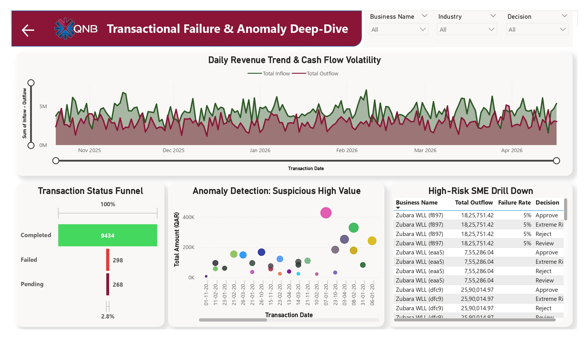

Fragmented SME Data
Business profiles and transaction ledgers were distributed across operational sources and required centralized integration.
Demonstration project
Developed an end-to-end banking analytics platform that integrates SME profiles and transactions, automates data quality and incremental loading, calculates explainable credit-risk scores, and delivers portfolio, anomaly, and loan-eligibility intelligence for credit officers.
SME profile and transaction data arrived from multiple operational sources, while manual processing and fragmented reporting delayed credit-risk assessment and limited trusted portfolio visibility.
Business profiles and transaction ledgers were distributed across operational sources and required centralized integration.
Thousands of records required repetitive preparation, increasing processing time and the risk of duplicates or inconsistent values.
The absence of automated scoring delayed loan eligibility assessments and reduced operational efficiency.
High transaction volumes required incremental loading, strong data relationships, and prevention of orphaned records.
Business users lacked trusted, current insight into industry risk, liquidity stress, transaction failures, and anomalous behaviour.
A governed Microsoft Fabric, SQL Server, Python, and Power BI architecture automated the complete flow from raw SME data to explainable lending intelligence.
Parallel Copy Data activities moved SME Profiles and SME Transactions into OneLake Bronze/Lakehouse staging.
Applied cleansing, duplicate removal, null checks, format validation, and banking business rules before loading.
Dim_SME_Master and Fact_SME_Transactions were linked by BusinessID with primary/foreign-key controls and performance indexing.
Validated data was appended efficiently while SQL checks confirmed row counts and referential integrity.
Calculated credit performance, cash-flow margin, failed transactions, DSCR, volatility, and overall risk scores.
Used a transparent 0–100 model with 30% Credit, 40% Cash Flow, and 30% Stability pillars.
Classified SMEs as Green, Amber, Red, or Maroon to balance automation with human credit review.
Delivered executive exposure, industry heatmaps, approval funnels, transaction drill-down, and AI-assisted anomaly detection.
Automated synchronization at 00:00 AST ensured previous-day transactions were available for updated risk assessment.
These findings show what the solution reveals within the demonstration scenario.
The solution supported automated portfolio classification across the demonstration SME population.
Daily credit, debit, completed, pending, and failed movements were incorporated into credit-risk analysis.
Green, Amber, Red, and Maroon classifications supported fast approval, review, rejection, and critical-risk escalation.
Credit, Cash Flow, and Stability components created an explainable audit trail for every risk decision.
Power BI anomaly detection flagged transactions that deviated materially from historical SME behaviour.
Scheduled midnight processing delivered updated portfolio and loan-eligibility intelligence without manual intervention.
Automated risk scoring reduced reliance on manual review and standardized decision logic across the SME portfolio.
Cash-flow margins, transaction failures, late payments, and anomaly signals surfaced deteriorating businesses before default.
Explainable rules and an Amber review tier supported regulatory transparency while preserving human judgment.
Automated validation, incremental loading, and star-schema modeling established a reusable platform for future banking data sources.
Quantification note: The documents did not provide measured time or financial savings, so the quantified impact above reflects documented portfolio scale, risk-model structure, analytical coverage, and refresh cadence only.
The architecture combines governed ingestion, relational modeling, explainable scoring, and interactive decision support.
Profiles and transactions
Validate, deduplicate, enforce rules
Dim_SME_Master and Fact_SME_Transactions
DSCR, cash flow, failures, risk tiers
Eligibility, anomalies, portfolio monitoring
Trusted operational data is converted into explainable credit decisions and actionable SME portfolio intelligence.


The repository contains project documentation, risk-scoring logic, data architecture, dashboard assets, and implementation details.
Discover more industry transformation and enterprise analytics projects.